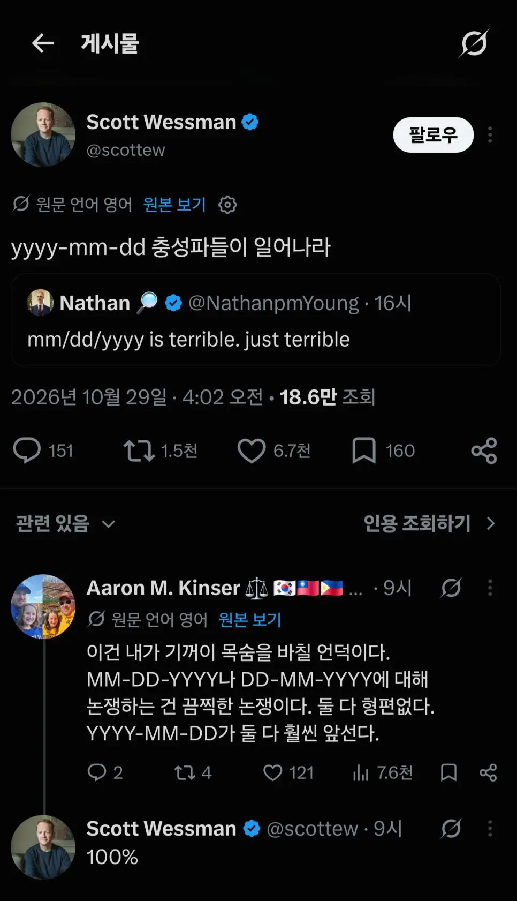

양놈들도 ㅈ같아하는 표기법
댓글
dd mm yy 이게 개좆같은게
mm dd yy 이거랑 존나 햇갈림 ㅋㅋ
꼭 DD MM YY표기인 새끼들은 12일 아래임 시발련들
데이먼스 이어가 dd-mm-yyyy 라는 뜻이었음?
무역일 보는데 서류 쓸 때 NOV 12 2026으로 정착함
12/NOV/2026
외국친구 내년에 벚꽃보러 오려고 한국행 티켓 끊었었는데
저 표기법 때문에 3월달에 끊을뻔함 ㅋㅋㅋ
진짜 뭐같음 날자 입력할때 실컷 년, 월 하고 일 고르려 보면 12 가 끝이야 사이트마다 다른것도 개 열받아 통일을 하던가
난 도대체가 일월년 표기는 뭘 하다가 표준이 된걸까 궁금하던데
dd mm yyyy 면 양반이지
dd mm yy(뒷자리) 면진짜 좆같아짐 ㅋㅋㅋ